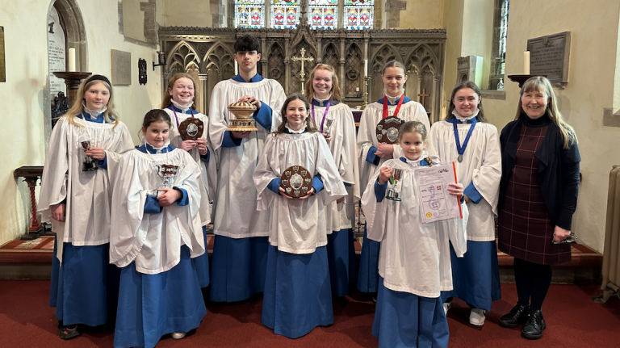

Choir and Junior Choir
Music is an important part of our worship and generations of children and adults have enjoyed singing in St Helen’s Church Choir.
We currently have 30 members in the choir. We would be delighted to welcome new members this year, especially under 18s and lower voices. Several of our adult choristers are parents of the junior choristers – we all sing together as one choir and our junior choristers do some extra items from time to time.
Choir practice is at 9:15am every Sunday morning in The Games’ Room, 39 Cowgate, Welton, just opposite St. Helen’s church. At 10:00am we all rush down to the church, quickly change into our choir robes and emerge a few minutes later from the choir vestry to lead the singing in the morning service at 10:15am. We also sing at weddings, special services and concerts in Welton and sometimes further afield.

In 2020, as a result of the coronavirus pandemic and thanks to one of our basses, Anthony, we were able to set up a St Helen’s Virtual Choir and since March 2020 about 80% of the choir plus a number of former choristers and other friends of the choir have been able to take part in this new venture for us – practising, recording and then uploading to the Virtual Choir website, where Anthony then puts the music and videos together. We prepared one or two items for each Sunday Zoom service, a whole concert for the Gardens Open Day and lots and lots of carols for Advent and Christmas during the pandemic, and friends and former choristers were able to join from afar – we even occasionally had some participation from singers in Glasgow, London and Qatar!
As life began to return to normal we were delighted to be able to meet again in person to practice and to sing together in church, but we have also continued to use the Virtual Choir to rehearse our music at home and make recordings, so that these recordings can be used on the twice weekly online services which have become a regular feature at St Helen’s and which are much appreciated by members of the church who cannot get to church very easily.
Hail Gladdening Light, John Stainer
The Junior Choir is for children and young people from the age of 7 – 18 inclusive. No previous choir experience is required and you do not have to know how to read music – although if you can that is an asset. Children will have the opportunity to learn about singing, music and faith. We follow the Royal School of Church Music ‘Voice for Life‘ Scheme, which teaches children how to sing correctly, music theory, and helps them to build a repertoire of hymns they know well, as well as enabling some wonderful friendships to be formed.
Some of the junior choir with medals and certificates from Cottingham Musical Festival, St. Helen’s, March 2024.
Some of the junior choir with at the Cottingham Musical Festival Celebration Concert, Cottingham Methodist Church, March 2024.

Some of the choir at the RSCM Festival Evensong, York Minster, September 2023.
Millie, Emma and Lily receiving their RSCM awards at York Minster, September 2023.
Confirmation candidates singing then anthem ‘God be in my head’ (Wilby), during their confirmation service, May 2023.
Junior Choir at Cottingham Music Festival, February 2023.
Junior Choir Practice at St. Helen’s Church, February 2023.
So why not give it a try? You can combine the fun of making music together, discovering more about the Christian faith and rapidly learn lots of hymns, songs and other choral music whilst at the same time making friends for life and helping keep alive the proud choral tradition in our village church.
If you would like to become a chorister at St. Helen’s church, please come along to our main Sunday Service at 10:15am – or contact the Choir Director, Helen Duffus.
Choral Evensong at St Mary’s, Cottingham, February 2023.
RSCM Medal Awards, January 2023.
Some of the Junior Choir at Rotary Club carol concert at Howden Minster, December 2022.
Some of the Junior Choir at the RSCM Festival at Selby Abbey, December 2022.
Some of the Junior Choir, at St. Helen’s, January 2023
Some of the Junior Choir at Rotary Club carol concert at Howden Minster, December 2022.
Millie and Lily with RSCM Dean’s Awards, Selby Abbey, 2022.
Evensong at Hull Minster, RSCM Festival 2019.
Emma receiving Archbishop’s Award, 2019.
Junior Choir, 2019.
Evensong at St. Mary’s Church, Cottingham, 2019.
A Thousand Years, D Hodges and Christina Perri, arr Andy Beck
Psalm 23 (Goodall)
Songbird, Christine McVie, arr. Paul Langford